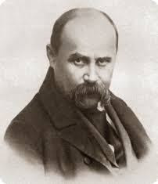
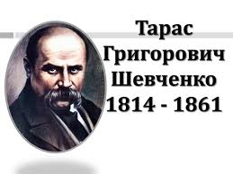

Катерина
Кохайтеся, чорнобриві,
Та не з москалями,
Бо москалі – чужі люде,
Роблять лихо з вами…
Не слухала Катерина
Ні батька, ні неньки,
Полюбила москалика,
Як знало серденько.
Полюбила молодого,
В садочок ходила,
Поки себе, свою долю
Там занапастила…
Сидить батько кінець стола,
На руки схилився;
Не дивиться на світ божий:
Тяжко зажурився.
Коло його стара мати
Сидить на ослоні,
За сльозами ледве-ледве
Вимовляє доні:
"Що весілля, доню моя?
А де ж твоя пара?
Де світилки з друженьками,
Старости, бояре?
В Московщині, доню моя!
Іди ж їх шукати,
Та не кажи добрим людям,
Що є в тебе мати.
Проклятий час-годинонька,
Що ти народилась!
Якби знала, до схід сонця
Була б утопила...

Мені однаково, чи буду
Мені однаково, чи буду
Я жить в Україні, чи ні.
Чи хто згадає, чи забуде
Мене в снігу на чужині —
Однаковісінько мені.
В неволі виріс між чужими,
І, неоплаканий своїми,
В неволі, плачучи, умру,
І все з собою заберу —
Малого сліду не покину
На нашій славній Україні,
На нашій — не своїй землі.
I не пом'яне батько з сином,
Не скаже синові: — Молись.
Молися, сину: за Вкраїну
Його замучили колись. —
Мені однаково, чи буде
Той син молитися, чи ні...
Та не однаково мені,
Як Україну злії люди
Присплять, лукаві, і в огні
Її, окраденую, збудять...
Ох, не однаково мені.
